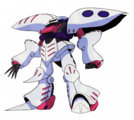
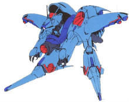

SZ-010 ZZ高达： MSZ-010 ZZ高达（ZZ GUNDAM）是阿纳海姆电子公司与奥古合作、根据“Z计划”衍生出来的MS，是一台具有强大火力的可分离、合体、变形的MS。 另外，该机是阿纳海姆公司设计的第六台高达型MS，因此也有一个“θ高达”的代号。阿纳海姆公司当初设计ZZ高达时，是以使用尖端科技制造的MSZ-006Z高达为基础开发的（其中也包括了神秘的生物传感器），但也导入了RX-78-2高达所独创的核心调节器系统概念，使用了新型的核心战斗机FXA-07GB新核心战机，这使得ZZ高达成为拥有充分变形能力的机体。其可以变形为重型战斗轰炸机“G堡垒（G-Fortress）”，与MS形态相比，其巡航速度及巡航距离有了飞跃性的提高。同样的，G堡垒也可以分离成为核心顶机（上半身部件+核心战斗机）和核心底机（下半身部件+核心战斗机），这两部战机都能单独行动。但是，与Z高达的WR模式不同，该机的G堡垒并不能让ZZ高达拥有单机突入大气层的能力。 而ZZ高达的盾牌也与此前的高达型MS不同，并非是可选装备，而是固定在手臂上的。这个盾牌除了可以用作防御外，在大气层内飞行时，也能起到一个G堡垒和核心顶机的翅膀的作用，以增加流动性。 ZZ高达给人印象最深刻的莫过于它那些使用超高能量的武器了，也为此拥有了一个能产生极高出力的反应堆来提供它们能量。其头部的特征武器高能MEGA粒子炮（High Mega Cannon）是一门一发就能消灭数架敌机的可怕武器，但同时也是一个用电大户，再加上2连装光束步枪、大型光束剑等武器，使得ZZ高达不得不经常在发射完这些武器后检查机体的剩余能量，如不够就得撤离战场补充能量，这就使ZZ高达的作战持续时间限定在了一个很小的范围之内，使其不能进行长时间的战斗。而这一点，也成为ZZ高达的致命缺点。其他武装方面，ZZ高达头部的火神炮系统也不同于以往，是一对60mm的双火神炮系统，也就是左右各两门共计四门。 此外，由于ZZ高达拥有复杂的核心战机系统以及变形机构，让机体的结构显得有些薄弱。这个问题在MSZ-010S强化型ZZ高达和FA-010S全装甲ZZ高达这两个增强版中得到了修正。 该机制造完成后便配备在阿伽玛号上，由第一殖民卫星“香格里拉”上的NewType少年捷多·亚西塔驾驶，在第一次新吉恩战争的最后战斗中，在击破了哈曼·卡恩驾驶的AMX-004卡碧尼]]之后，被卷入第三殖民卫星的爆炸中而遭到大破，捷多则成功逃生。
机体型号：MSZ-010
机体类型：泛用试作型可变MS
制造商：阿纳海姆电子公司
所属：奥古
初次配备：U.C.0088
尺寸： MS形态：全高22.11米。G堡垒形态：全长30.13米，翼展18.52米。核心顶机形态：全长19.91米，翼展18.52米。核心底机形态：全长22.06米，翼展15.93米 全备重量：MS形态和G堡垒形态：本体重量32.7吨，全备重量68.4吨；核心战机形态：全备重量30.9吨；核心、战机形态：全备重量49.1吨
发动机功率：7340KW
推进力：2×21700KG+4×14400KG=101000KG（MS模式下）；2×21700KG+4×14400KG+2×17300KG+2×16300KG=168200KG（G堡垒模式下）；2×21700KG+4×14400KG+2×17300KG=135600KG（核心战机形态下）；2×16300KG+4×5240KG=53560KG（核心顶机形态下）；姿势制御喷嘴数：32
加速度： 1.48G（MS模式下）；2.46G（G堡垒模式下）；1.73G（核心顶机形态下）；2.76G（核心战机形态下）
固定武装：大型光束军刀×2，额定输出功率1.1MW，收藏在背部充电背包中，仅用于MS形态；2连装光束炮（由2把光束军刀组合而来）×1，额定输出功率20MW，仅用于G堡垒及核心底机形态；21连装导弹发射器×2，安装在背部，仅用于MS、G堡垒及核心底机形态；大型高能MEGA粒子炮，额定输出功率50MW，安装在头部，仅用于MS形态；60mm火神炮×2，各备弹400发，安装在头部两侧，仅用于MS形态；导弹×2，安装在“FXA-07GB新核心战斗机”中，仅用于核心战机
选用手部武器：2连装光束步枪，额定输出功率21.2MW（2×10.6MW），既能由MS形态手持，也能装备在核心顶机上

卡碧尼： AMX-004 卡碧尼（Qubeley）是阿克西斯制造的NT专用MS，是以旧吉恩军的MAN-08艾尔美斯为基础开发的，所搭载的塞可缪精神感应系统掌管着机体控制和超级攻击终端圆锥浮游炮的运行。机体两肩的吸附翼能够独立活动，内有12台姿势控制喷嘴，同时也具备AMBAC的功能，使机体具有高度的机动性。 照艾尔美斯的bit而开发的十二门圆锥浮游炮由于采用了能量CAP技术，与内部安装推进器的bit相比，体积小、重量轻、威力强劲，但运行时间短，战斗时间过长时，必须返回母舰补充能源。同时在AMX-001原型卡碧尼的基础上，该机成功将尺寸进一步缩小，成为第一台用正常MS的大小就搭载了塞可缪系统的机体。 本机作为新吉恩军的领袖——哈曼·卡恩的专用机，从0087年开始一直陪伴到她在0089年与MSZ-010ZZ高达的决斗中牺牲为止，可谓一代名机。
机体型号：AMX-004
机体类型：NT专用试作型MS
制造商：阿克西斯
所属：新吉恩
尺寸全高：18.9米
本体重量：35.2吨
全备重量：57.2吨
发动机功率：1820KW
推进力：2×30800KG=61600KG；姿势制御喷嘴数：12
加速度：1.08G
传感器探测有效半径：10900米；搭载塞可缪系统
固定武装：光束军刀（可兼作光束炮）×2
远程武器：浮游圆锥炮×12，额定输出功率1.3MW。

杰姆鲁·芬： 本机是新吉恩计划开发的可变型MA，但直到第一次新吉恩战争结束，杰姆鲁·芬都没有被制造完成。而3台未被完成的机体采用了将头部和手臂暂设在身体内部的权宜之计，驾驶员则由“3-D”小队（名字分别为Dale、Deune和Danny）担任。 杰姆鲁·芬是一台拥有强火力和高速度的机动堡垒，其主要武器是位于胸部一门超级MEGA粒子炮，威力可与战舰的主炮相媲美；掌部内藏的MEGA粒子炮在近距离格斗战时可兼作光束军刀。 杰姆鲁·芬可以变形成一台酷似蹲着的MS，用以应付白兵战。当它为MA形态时，接上附加的大型推进器，就能够进行长距离移动和进行高机动战斗。大型推进器本身拥有驾驶舱和武装，并且可进行单独的飞行。在和杰姆鲁·芬结合后，推进器上的武装也可继续使用，提高了机体的火力。推进器上的导弹发射器以红外线作为诱导来发射，分别装备在机体前放两舷，共18发。同时，机体内部所装备的轰炸组件（Bomber Unit）可用来对殖民地内部或月球都市进行轰炸。 原计划甚至设计了一种搭载有核脉冲发动机的大型超长距离航行用助推器与之合体，使其能够适应在木星环境下的长期作战。
机体型号：AMA-01X
机体类型：宇宙战用试作型MA
制造商：阿克西斯
所属：新吉恩
初次配备：U.C.0088
尺寸：MS形态：全高17.2米；MA形态：全长20.5米；翼展14.9米；安装有大型助推器的MA形态：全长28.2米；翼展15.2米
本体重量：MS形态：本体重量24.7吨；全备重量58.5吨；MA形态：本体重量24.7吨；全备重量58.5吨；安装有大型助推器的MA形态：本体重量35.5吨；全备重量103.6吨；
发动机功率：4750KW
推进力：1×34400KG+2×24100KG=82600KG；安装有大型助推器的MA形态：1×34400KG+2×24100KG+2×38700KG+1×28200KG=188200KG；姿势制御喷嘴数：10
加速度：1.41G；安装有大型助推器的MA形态：1.82G；
装备及设计特征：传感器探测有效半径：13400米
固定武装：胸部超级MEGA粒子炮，MS形态额定输出功率6MW，MA形态额定输出功率30.1MW；3连装导弹发射器×2；掌部MEGA粒子炮×2，额定输出功率5.3MW；安装有大型助推器的MA形态时追加武装：超级MEGA粒子发射器×1，可调节功率范围6.2MW～40.5MW；8连装导弹发射器×2；光束枪×2，额定输出功率3.2MW；Bomber Unit